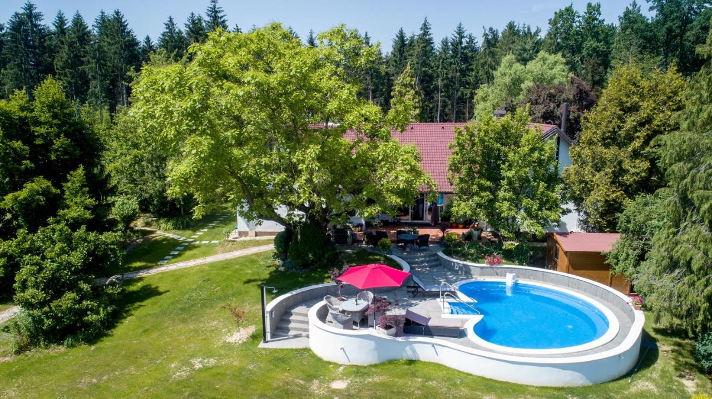

Posjeti
Smještaj

U nastavku možete vidjeti smještaj u Općini Maruševec pod privatnim
vlasništvom.
Old Oak House
nalazi se 500 m od dvorca Maruševec. U svojoj ponudi uz smještaj ima
bazen, vrt sa roštiljem, ukrasno jezero te kućicu na drvetu. U kući se
nalazi 4 zasebne spavaće sobe, 3 kupaonice koje, uz sušilo za kosu,
sadržavaju i perilicu za rublje. Uz sobe i kupaonu, gostima je
dostupna i kuhinja i terasa sa dodatnim sadržajima poput ventilatora
ili klima uređaja. Okolica smještaja savršena je za biciklizam ili
pješačenje te obilazak vinskih ruta.
Oak Cottage
nalazi se pokraj srednje škole u Maruševcu te nasuprot dvorca
Maruševec, udaljenog 400m. Ovaj smještaj sastoji se od jedne spavaće
sobe, kupaonice, potpuno opremljene kuhinje i dnevnog boravka. Okružen
je lijepim vrtom i velikim dvorištem te voćnjakom iz kojeg gosti
slobodno ubiru voćke. Vani se također nalazi i sjedeća garnitura u
hladu
Restorani
Posjetitelji Maruševca mogu uživati u domaćoj bogatoj tradicionalnoj hrani koju nudi OPG Martinčević. Ovo obiteljsko seosko imanje nudi mogućnost proslava poput krizmi, prve pričesti, krštenja, rođendana te isto tako i vjenčanja. Ukoliko želite proslaviti svoj najbolji dan u životu, možete pozvati do 100 gostiju te dobiti svu pomoć u organizaciji kao što je uređenje sale, menija te i angažiranje benda. Seosko imanje nalazi se u srcu prirode pa se isto tako i posjetitelji mogu opustiti i zaboraviti na životne probleme barem na taj tren i obnoviti svoju energiju.
{kind=link}
{kind=link}
{kind=link}
{kind=link}
Korisne informacije
Općina Maruševec jedna je od općina sjevera Zagorja koje su 2022.
godine potpisale Sporazum o suradnji o osnivanju Turističke zajednice
Sjever Zagorja. Ovaj sporazum omogućava budućnost te daljnji razvoj
turizma u Varaždinskoj županiji.
Osniva se Turistička zajednica Sjever Zagorja koja će obuhvatiti
šest općina Varaždinske županije
Pokrenuto osnivanje Turističke zajednice Sjever Zagorja